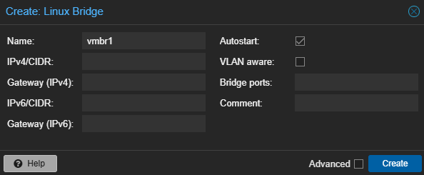
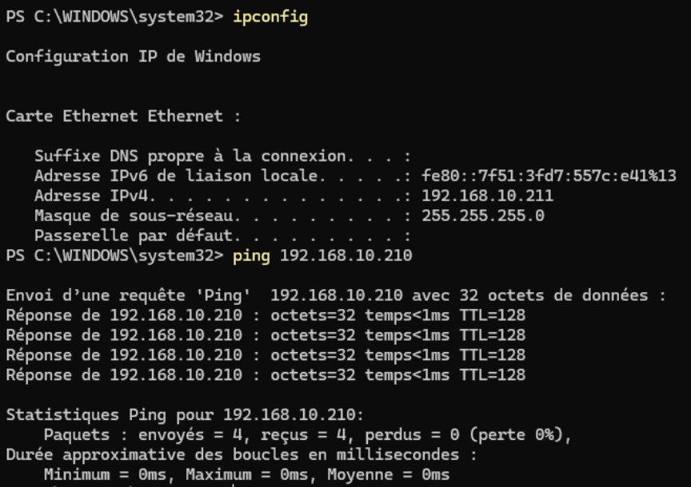
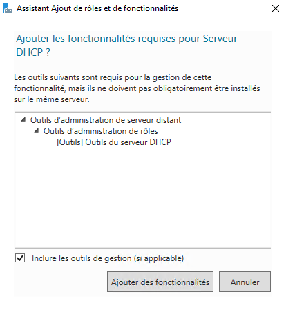
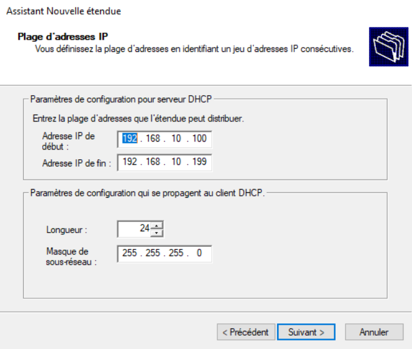
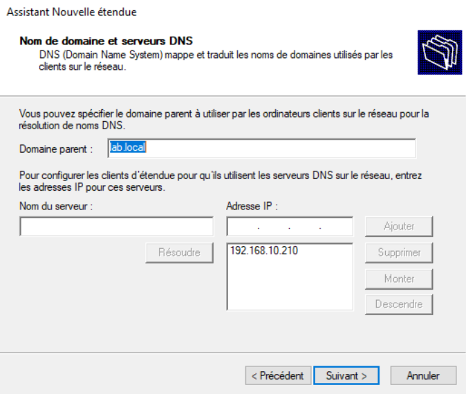
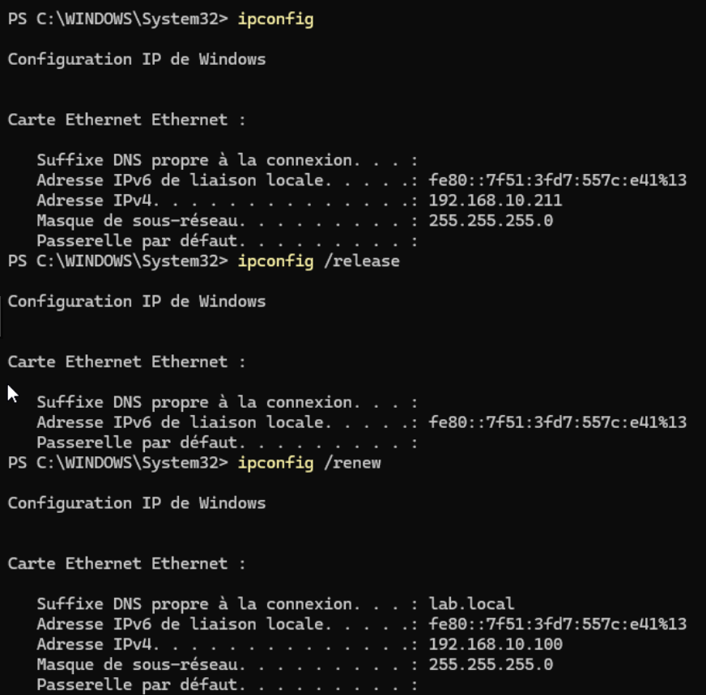
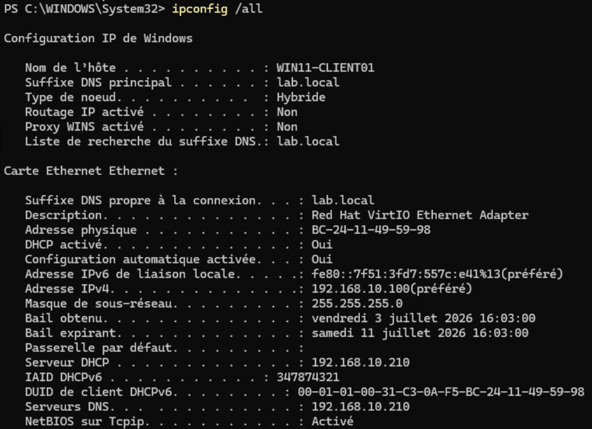
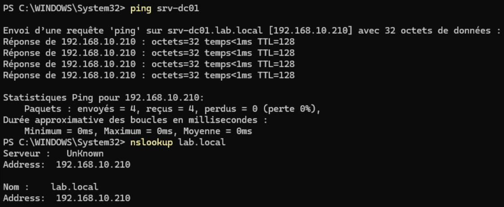

TP09 - DHCP
Théorie : Cours - DHCP Captures :
99-Captures/TP09/· Prérequis : TP08-DNS
Objectif
Mettre en place un serveur DHCP dédié au laboratoire Active Directory afin d'attribuer automatiquement les adresses IP aux machines virtuelles.
Pourquoi changer de réseau ?
Le réseau domestique utilise déjà le serveur DHCP de la Freebox. Afin d'éviter la présence de deux serveurs DHCP sur le même réseau, le laboratoire sera isolé sur un second réseau virtuel Proxmox avec une plage d'adresses dédiée.
Architecture
Réseau domestique
| Élément | Adresse |
|---|---|
| Freebox | 192.168.1.254 |
| DHCP | 192.168.1.2 → 192.168.1.200 |
| Proxmox | 192.168.1.200 |
Réseau du laboratoire
| Élément | Valeur |
|---|---|
| Réseau | 192.168.10.0/24 |
| Serveur DHCP | SRV-DC01 |
| Adresse du serveur | 192.168.10.210 |
| Scope | 192.168.10.100 → 192.168.10.199 |
| DNS | 192.168.10.210 |
| Passerelle | Aucune (réseau isolé) |
| ## Prérequis |
- [v] TP08-DNS validé
Étapes
1. Création d'un réseau virtuel Proxmox
Créer un nouveau bridge réseau dédié au laboratoire.
Exemple :
vmbr0
↓
Carte réseau physique
→ Réseau domestique
vmbr1
↓
Aucune interface physique
→ Réseau privé du laboratoire
Le bridge vmbr1 constitue un réseau privé entre les machines virtuelles. Il n'est pas relié directement au réseau domestique.
Une fois créé :
- connecter SRV-DC01 sur
vmbr1 - connecter WIN11-CLIENT01 sur
vmbr1 - connecter les futures machines du laboratoire sur
vmbr1

Création du Bridge vmb12. Modification de l'adressage IP
Les machines du laboratoire changent de réseau.
| Machine | Ancienne IP | Nouvelle IP |
|---|---|---|
| SRV-DC01 | 192.168.1.210 | 192.168.10.210 |
| WIN11-CLIENT01 | DHCP ou 192.168.1.211 | 192.168.1.211 puis DHCP (plus tard) |
Configurer temporairement le serveur avec :
- Adresse IP :
192.168.10.210 - Masque :
255.255.255.0 - Passerelle : aucune
- DNS :
192.168.10.210

Vérification que le serveur répond sur sa nouvelle adresse3. Installation du rôle DHCP
Depuis le Gestionnaire de serveur :
- Ajouter des rôles et fonctionnalités.
- Installer le rôle DHCP Server.
- Autoriser le serveur DHCP dans Active Directory.

Installation du rôle DHCP4. Création du scope
Ouvrir :
Gestionnaire de serveur
→ Outils
→ DHCP
Sous IPv4, créer une nouvelle étendue.
Configurer :
- Nom :
LAB - Début :
192.168.10.100 - Fin :
192.168.10.199 - Masque :
255.255.255.0 - Aucune exclusion
- Bail : 8 jours
Choisir Configurer les options maintenant.

Création du scope5. Configuration des options DHCP
Configurer :
Passerelle
Aucune.
Le laboratoire est volontairement isolé du réseau domestique.
DNS
- Domaine :
lab.local - Serveur DNS :
192.168.10.210
WINS
Ne pas configurer.
Enfin :
- Activer l'étendue.

Options6. Test sur le client
Configurer la carte réseau de WIN11-CLIENT01 en obtention automatique.
Dans une invite de commandes :
ipconfig /release
ipconfig /renew
ipconfig /all
Vérifier que le client obtient :
- une adresse comprise entre
192.168.10.100et192.168.10.199 - le serveur DNS
192.168.10.210(penser à modifier la zone DNS inverse) - le domaine
lab.local


Tester également :
ping srv-dc01
nslookup lab.local

Validation
- [v] Réseau virtuel
vmbr1créé - [v] Les VM utilisent le nouveau réseau privé
- [v] Le serveur DHCP est installé
- [v] Le scope est actif
- [v] Le client reçoit une adresse IP automatiquement
- [v] La résolution DNS fonctionne
Progression
| Étape | Lien |
|---|---|
| Prérequis | TP08-DNS |
| Suite recommandée | → TP10-Routage-et-segmentation |
| Branches | Cours - GPO |
| Théorie | Cours - DHCP |
Suivi : Progression